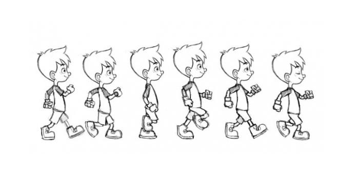
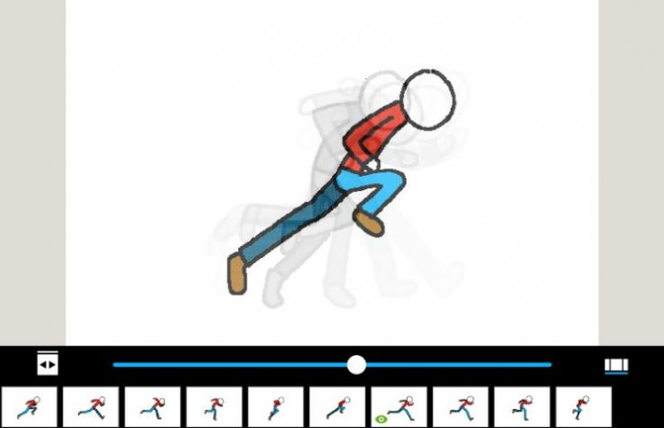
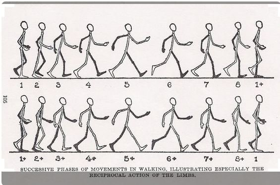

PRIMERA ANIMACION
Lo que hemos hecho es aplicar la regla color general al elemento a y hemos cambiado esta regla cuándo se pasa el ratón por encima (hover). Con la regla transition hemos definido como queremos que se haga ese cambio del color. Este ejemplo (ultra-básico) tendría esta pinta:


Cada parámetro es: transition-poperty: propiedad a la que se le va a aplicar el efecto de transición. Cualquier propiedad CSS es válida: width, height, color, border, etc. transition-duration: duración del efecto. Puede ser en segundos (s) o milisegundos (ms). trasition-timing-function: define la curva de velocidad a la que se produce el efecto. Puede ser: ease: este es el valor por defecto. Tiene un comienzo lento, luego rápido y termina de nuevo lentamente. Es equivalente a cubic-bezier(0.25,0.1,0.25,1). linear: la misma velocidad durante toda la duración de la transición. Equivalente a cubic-bezier(0,0,1,1). ease-in: efecto de transición con comienzo lento. Equivalente a cubic-bezier(0.42,0,1,1). ease-out: efecto de transición con comienzo rápido y final lento. Equivalente a cubic-bezier(0,0,0.58,1). ease-in-out: efecto de transición con comienzo y final lento; más rápido en medio. Equivalente a cubic-bezier(0.42,0,0.58,1). cubic-bezier(n,n,n,n): define tus propios valores para la curva de Bezier. Cada valor es entre 0 y 1. initial: establece esta propiedad a su valor por defecto. inherit: hereda esta propiedad del elemento padre. transition-delay: retraso en el comienzo de la transición. Puede ser en segundos (s) o milisegundos (ms). transition-timing-function y transition-delay se pueden omitir. En este caso se tomará el valor ease y 0 respectivamente. Por ejemplo:
